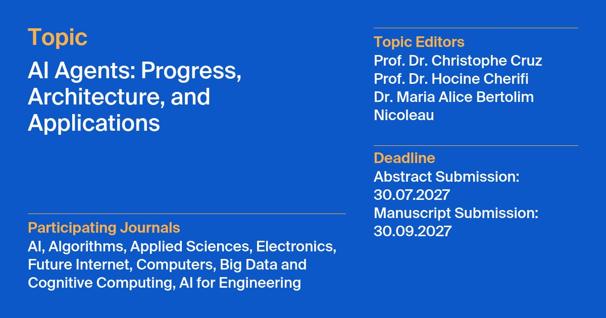

Topic MDPI AI Agents¶

Je suis co-éditeur, avec Hocine Cherifi et Maria Alice Bertolim Nicoleau, du Topic MDPI AI Agents: Progress, Architecture, and Applications, lancé en avril 2026. Il rassemble des travaux sur les agents IA, des fondements théoriques aux déploiements réels.
Appel à contributions¶
Le Topic accueille des articles originaux, des revues et des communications courtes sur les architectures d'agents (LLM, multi-agents, autonomes), la planification, le raisonnement et la décision, l'usage d'outils, la mémoire et le RAG, les applications en santé, éducation, robotique et industrie, la sûreté, l'alignement et l'évaluation, ainsi que l'interaction humain-agent. Les contributions interdisciplinaires sont particulièrement bienvenues.
Échéances : Résumés 30 juillet 2027 · Manuscrits 30 septembre 2027
Éditeurs : Christophe Cruz, Hocine Cherifi, Maria Alice Bertolim Nicoleau
Mots-clés
- AI agents
- large language models
- multi-agent systems
- autonomous agents
- planning and reasoning
- tool use
- retrieval-augmented generation
- AI safety and alignment
- human–agent interaction
- agentic AI
Dynamique du Topic¶
Manuscrits soumis par mois¶
Manuscrits soumis par thématique¶
Chiffres agrégés au 6 novembre 2026. Les thématiques sont attribuées d'après les titres et restent indicatives. Le total inclut les versions soumises à nouveau.
Articles publiés¶
Articles publiés par mois¶
- Ivan Bulychev, Andrey Savchenko, Hybrid Graph Retrieval-Augmented Language Agents for Collaborative Recommendation. AI, 19 septembre 2026.
- Edouard Patault, Tudal Sinsin, Lucie Gervasone, Paul Quesnot, Simon Girard, Benjamin Pesquier, Benoit Marduel, Can the Production of Territorial and Environmental Diagnosis by Consulting Firms Be Co-Piloted? An Experimental Analysis of the Potential Offered by Multi-Agent Frameworks. AI for Engineering, 9 septembre 2026.
- Hedi Hamdi, Nabil Almashfi, Adaptive k-Truss-Constrained Agentic AI Framework for Resilient Multi-Agent UAV Swarm Coordination in Dynamic Disaster Environments. Electronics, 6 septembre 2026.
- Yonggang Gong, Minghao Shao, Xiaoqin Lian, Jialu Zhou, DyFIRER: A Dynamic Feedback Iterative Multi-Agent Framework for Open Relation Extraction Based on Large Language Models. Applied Sciences, 25 août 2026.
- Jia Luo, Min Liu, Zixin Huang, Zikan Ke, Qing Wang, ReflectiChain: Mitigating Semantic-Execution Drift in Long-Horizon LLM Agents via Retrospective Reflection and Double-Loop Policy Adaptation. Electronics, 4 août 2026.
- Maha Mesfer Alghamdi, Wesam Ali Alamri, IKEA: Intelligent Knowledge Extraction with Reasonable and Agentic AI Agents. Applied Sciences, 3 août 2026.
- Can Zhou, Chang Zhou, Long Xiang, PERFED: Privacy Preserving Personalized Federated Learning with Reinforcement and Meta-Learning for Digital Language Education. Algorithms, 1 août 2026.
- Leonidas Anagnou, Andreas Vezakis, Ioannis Vezakis, Ioannis Kakkos, Ourania Petropoulou, George K. Matsopoulos, Knowledge Graphs vs. SQL over Structured EHR Data. Future Internet, 15 juillet 2026.
- Julien Delaunay, Maissaa Sarkis, Jordi Solé-Casals, Jordi Cusido, A Modular Evaluation of AI-Assisted Clinical Documentation. Applied Sciences, 10 juillet 2026.
- Yuxuan Guo, Xiaodeng Zhou, Su-Kit Tang, LLM-Integrated Semantic Deep Learning Framework for Automated Floor Plan Analysis, Area Estimation, and Compliance Assessment of Existing Buildings. Applied Sciences, 23 juin 2026.
- Mohamed M. Morsy, AI-on-Chip Systems: A Cross-Layer Review of Architectures, Interconnects, Design Automation, and Embedded Intelligence. Electronics, 15 juin 2026.
- Andrey Martynov, Maria Lapina, Mikhail Babenko, A ReAct- and RAG-Based Framework for Metadata Generation and Access in Relational Data Warehouse Processes. Big Data and Cognitive Computing, 27 mai 2026.
Revues participantes¶
| Revue | Facteur d'impact | CiteScore | JCR | Jours avant 1re décision | Jours de l'acceptation à la publication |
|---|---|---|---|---|---|
| AI | 6.5 | 7.3 | Q1 | 20 | 6 |
| AI for Engineering | - | - | - | 44 | 12 |
| Algorithms | 2.6 | 5.4 | Q2 | 18 | 4 |
| Applied Sciences | 2.9 | 6.1 | Q2 | 15 | 3 |
| Big Data and Cognitive Computing | 5.3 | 11.4 | Q1 | 23 | 5 |
| Computers | 5.2 | 9.1 | Q2 | 15 | 4 |
| Electronics | 2.9 | 7.0 | Q2 | 15 | 3 |
| Future Internet | 4.6 | 10.0 | Q2 | 15 | 4 |
Indicateurs affichés sur la page du Topic.